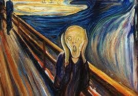
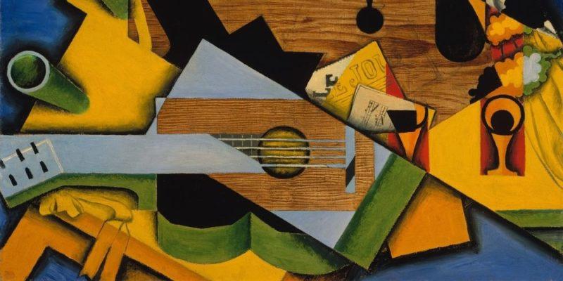
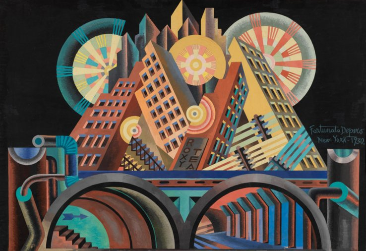
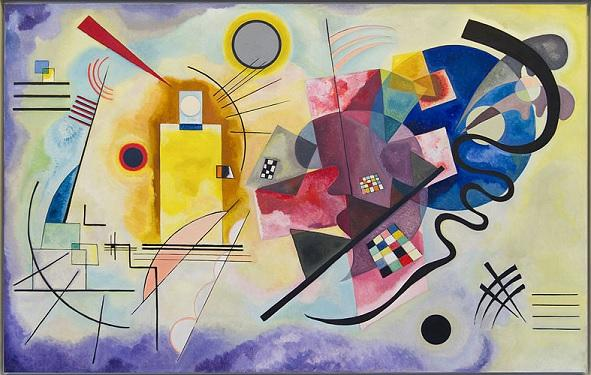
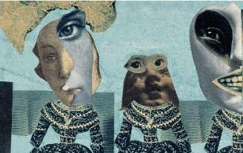
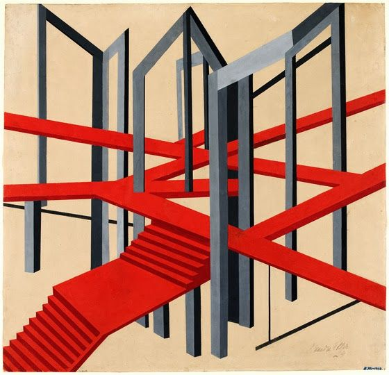

Literature
What are the avant-garde?
The avant-garde is a set of diverse artistic movements that emerged in the early twentieth century, are considered a break in the paradigm or way of thinking.
Characteristics of the avant-garde
The main characteristics of the avant-garde were mainly the rupture of the traditional, the interdisciplinary character, the search for originality, conceptual character, freedom of expression, among others. These characteristics were present in the avant-garde movements that were formed throughout history, for example:





